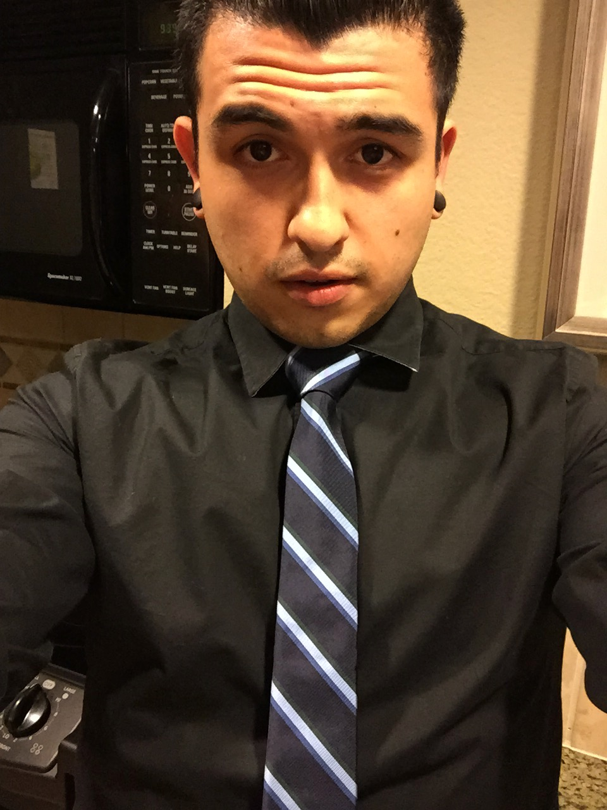

About Me
My name is Anthony, I also go by Ace, I'm 26 years old. I was born in Panorama City and raised in Burbank, where I currently reside. When I'm not working as a chef to help pay for school, I usually start my day off with a lite of breakfast of bread and butter or an acai/fruit bowl. Afterwards I had to the gym for about an hour, run some errands if I have any. Usually once I'm done with my errands I like to shower work on any HW assignments or additional learing I need to do.
My hobbies include music, I play the guitar, bass, drums, keyboard and sing. I love to eat and try new foods or restaurants. I love to snowboard during the winter season. I usually only go to Bear/Summit Mountain if I only have a day to snowboard. Otherwise I love to snowboard at Mammoth Mountain whenever I have a free weekend and I'm able to go. I also like to play soccer, golf, go hiking, watch movies with my friends/family. I also enjoy playing video games and I am a huge nerd at heart.
Connect with Me